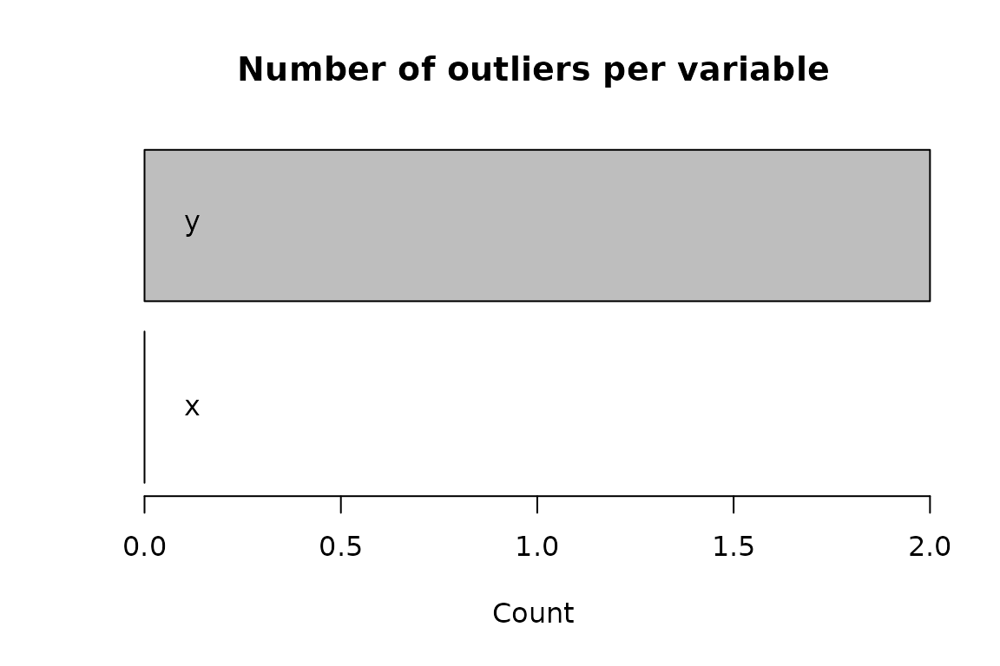

Overview
{outForest} is a random forest-based implementation of the method described in Chapter 7.1.2 (“Regression model based anomaly detection”) of (Chandola, Banerjee, and Kumar 2009). Each numeric variable is regressed onto all other variables using a random forest. If the scaled absolute difference between observed value and out-of-bag prediction is suspiciouly large (e.g. more than three times the RMSE of the out-of-bag predictions), then a value is considered an outlier. After identification of outliers, they can be replaced e.g. by predictive mean matching from the non-outliers.
The method can be viewed as a multivariate extension of a basic univariate outlier detection method, in which a value is considered an outlier if it deviates from the mean by more than, say, three times the standard deviation. In the multivariate case, instead of comparing a value with the overall mean, rather the difference to the conditional mean is considered. {outForest} estimates this conditional mean by a random forest.
Specificly, the outlier score of the \(i\)-th observed value \(x_{ij}\) of variable \(j\) is defined as \[ s_{ij} = \frac{x_{ij} - \text{pred}_{ij}}{\text{rmse}_j}, \] where \(\text{pred}_{ij}\) is is the corresponding out-of-bag prediction of the \(j\)th random forest with RMSE \(\text{rmse}_j\). If \(|s_{ij}| > L\) with threshold \(L\), then \(x_{ij}\) is considered an outlier.
Why using random forests for calculating the conditional means? They often work well without parameter tuning, outliers in the input variables are no issue and the out-of-bag mechanism helps to provide fair outlier scores.
{outForest} utilizes the high-performance random forest implementation {ranger} (Wright and Ziegler 2017). Since it does not allow for missing values, any missing value is first being imputed by chained random forests implemented in {missRanger}.
In the examples below, we will meet different functions from the {outForest} package:
outForest(): This is the main function. It identifies and replaces outliers in numeric variables of a data frame.print(),summary()andplot(): To inspect outlier information.outliers()andData(): To extract information on outliers and the data with replaced outliers.generateOutliers(): To add nasty outliers to a data set.predict(): To apply a fitted “outForest” object to fresh data.
Installation
# From CRAN
install.packages("outForest")
# Development version
devtools::install_github("mayer79/outForest")Usage
We first generate a data set with two multivariate outliers. Then, we
use outForest() to find them.
library(outForest)
# Create data with multivariate outlier
set.seed(3)
t <- seq(0, pi, by = 0.01)
dat <- data.frame(x = cos(t), y = sin(t) + runif(length(t), -0.1, 0.1))
dat[c(100, 200), ] <- cbind(c(-0.5, 0.5), c(0.4, 0.4))
plot(y ~ x, data = dat)
# Let's run outForest on that data
ch <- outForest(dat)#>
#> Outlier identification by random forests
#>
#> Variables to check: x, y
#> Variables used to check: x, y
#>
#> Checking: x y
# What outliers did we find?
outliers(ch)
#> row col observed predicted rmse score threshold replacement
#> 1 100 y 0.4 0.8567112 0.07485516 -6.101265 3 0.9913182
#> 2 200 y 0.4 0.8244413 0.07485516 -5.670168 3 0.8113720
# Bingo! How does the fixed data set looks like?
plot(y ~ x, data = Data(ch))
# The number of outliers per variable
plot(ch)
Note that outForest() offers a ... argument
to pass options to its workhorse random forest implementation
ranger(), e.g. num.trees or mtry.
How would we use its “extra trees” variant with 50 trees? As data set,
we add a couple of outliers to the famous iris flower data set.
head(irisWithOutliers <- generateOutliers(iris, p = 0.02))
#> Sepal.Length Sepal.Width Petal.Length Petal.Width Species
#> 1 5.1 3.5 1.40000 0.2 setosa
#> 2 4.9 3.0 -13.32449 0.2 setosa
#> 3 4.7 3.2 1.30000 0.2 setosa
#> 4 4.6 3.1 1.50000 0.2 setosa
#> 5 5.0 3.6 1.40000 0.2 setosa
#> 6 5.4 3.9 1.70000 0.4 setosa
out <- outForest(
irisWithOutliers, splitrule = "extratrees", num.trees = 50, verbose = 0
)
# The worst outliers
head(outliers(out))
#> row col observed predicted rmse score threshold
#> 9 77 Petal.Width 8.617485 1.462865 0.6365155 11.240290 3
#> 7 2 Petal.Length -13.324488 1.572715 1.5200990 -9.800153 3
#> 6 135 Sepal.Width -5.061389 3.120949 0.9375457 -8.727402 3
#> 1 66 Sepal.Length 16.880345 6.070454 1.4580339 7.414019 3
#> 2 127 Sepal.Length -4.004644 6.355322 1.4580339 -7.105436 3
#> 8 136 Petal.Length -4.054545 5.790103 1.5200990 -6.476321 3
#> replacement
#> 9 1.5
#> 7 1.3
#> 6 3.0
#> 1 6.1
#> 2 7.3
#> 8 6.7
# Summary of outliers
summary(out)
#> The following outlier counts have been detected:
#>
#> Number of outliers
#> Sepal.Length 3
#> Sepal.Width 3
#> Petal.Length 2
#> Petal.Width 1
#>
#> These are the worst outliers:
#>
#> row col observed predicted rmse score threshold
#> 9 77 Petal.Width 8.617485 1.462865 0.6365155 11.240290 3
#> 7 2 Petal.Length -13.324488 1.572715 1.5200990 -9.800153 3
#> 6 135 Sepal.Width -5.061389 3.120949 0.9375457 -8.727402 3
#> 1 66 Sepal.Length 16.880345 6.070454 1.4580339 7.414019 3
#> 2 127 Sepal.Length -4.004644 6.355322 1.4580339 -7.105436 3
#> 8 136 Petal.Length -4.054545 5.790103 1.5200990 -6.476321 3
#> replacement
#> 9 1.5
#> 7 1.3
#> 6 3.0
#> 1 6.1
#> 2 7.3
#> 8 6.7
# Basic plot of the number of outliers per variable
plot(out)
# Basic plot of the scores of the outliers per variable
plot(out, what = "scores")Pipe
outForest() can be combined with the pipe:
Out-of-sample application
Once an “outForest” object is fitted with option
allow_predictions = TRUE, it can be used to find and
replace outliers in new data without refitting. Note that random forests
can be huge, so use this option with care. Further note that currently,
missing values in the new data are only allowed in one single variable
to be checked.
out <- outForest(iris, allow_predictions = TRUE, verbose = 0)
iris1 <- iris[1:2, ]
iris1$Sepal.Length[1] <- -1
pred <- predict(out, newdata = iris1)
outliers(pred)
#> row col observed predicted rmse score threshold replacement
#> 1 1 Sepal.Length -1 5.011421 0.369207 -16.28198 3 5.2
Data(pred)
#> Sepal.Length Sepal.Width Petal.Length Petal.Width Species
#> 1 5.2 3.5 1.4 0.2 setosa
#> 2 4.9 3.0 1.4 0.2 setosaThe formula interface
By default, outForest() uses all columns in the data set
to check all numeric columns with missings. To override this behaviour,
you can use its formula interface: The left hand side specifies the
variables to be checked (variable names separated by a +),
while the right hand side lists the variables used for checking.
So if you e.g. want to check only variable Sepal.Length
based on Species, then use this syntax.
out <- outForest(irisWithOutliers, Sepal.Length ~ Species, verbose = 0)
summary(out)
#> The following outlier counts have been detected:
#>
#> Number of outliers
#> Sepal.Length 3
#>
#> These are the worst outliers:
#>
#> row col observed predicted rmse score threshold replacement
#> 1 66 Sepal.Length 16.880345 5.928826 1.490069 7.349674 3 5.9
#> 2 127 Sepal.Length -4.004644 6.752837 1.490069 -7.219453 3 6.4
#> 3 135 Sepal.Length 13.663652 6.381728 1.490069 4.886972 3 7.4If you want to prevent outForest() to identify and
replace outliers in the response variable of a subsequent model,
Sepal.Length say, subtract that variable from the left hand
side.
out <- outForest(irisWithOutliers, . - Sepal.Length ~ ., verbose = 0)
summary(out)
#> The following outlier counts have been detected:
#>
#> Number of outliers
#> Sepal.Width 4
#> Petal.Length 2
#> Petal.Width 1
#>
#> These are the worst outliers:
#>
#> row col observed predicted rmse score threshold
#> 7 77 Petal.Width 8.617485 1.5489019 0.6485071 10.899777 3
#> 5 2 Petal.Length -13.324488 1.4629804 1.5531209 -9.521131 3
#> 4 135 Sepal.Width -5.061389 3.2467161 0.9712182 -8.554314 3
#> 6 136 Petal.Length -4.054545 6.0022195 1.5531209 -6.475198 3
#> 3 117 Sepal.Width 8.720982 2.9949163 0.9712182 5.895756 3
#> 2 66 Sepal.Width 3.100000 -0.8153869 0.9712182 4.031418 3
#> replacement
#> 7 1.5
#> 5 1.4
#> 4 2.8
#> 6 5.9
#> 3 2.9
#> 2 2.4Too many values are identified as outliers. Crap!
For large data sets, just by chance, many values can surpass the
default threshold of 3. To reduce the number of outliers, the threshold
can be increased. Alternatively, the number of outliers can be limited
by the two arguments max_n_outliers and
max_prop_outliers. E.g. if at most three outliers are to be
identified, set max_n_outliers = 3. If at most 1% of the
values are to be declared as outliers, set
max_prop_outliers = 0.01.
outliers(outForest(irisWithOutliers, max_n_outliers = 3, verbose = 0))
#> row col observed predicted rmse score threshold
#> 3 77 Petal.Width 8.617485 1.575285 0.6447998 10.921528 7.501523
#> 2 2 Petal.Length -13.324488 1.451632 1.5567481 -9.491657 7.501523
#> 1 135 Sepal.Width -5.061389 3.219084 0.9663933 -8.568430 7.501523
#> replacement
#> 3 1.5
#> 2 1.4
#> 1 3.1I don’t want outliers to be replaced!
By default outForest() replaces outliers by predictive
mean matching on the out-of-bag predictions. Alternatively, you can set
the replace argument to a different value:
"no": Outliers are not replaced."predicted": Outliers are replaced by the out-of-bag predictions (without predictive mean matching)."NA": Outliers are replaced by missing values.
So if you would like to replace outliers by NAs, write:
out <- outForest(irisWithOutliers, replace = "NA", verbose = 0)
head(Data(out))
#> Sepal.Length Sepal.Width Petal.Length Petal.Width Species
#> 1 5.1 3.5 1.4 0.2 setosa
#> 2 4.9 3.0 NA 0.2 setosa
#> 3 4.7 3.2 1.3 0.2 setosa
#> 4 4.6 3.1 1.5 0.2 setosa
#> 5 5.0 3.6 1.4 0.2 setosa
#> 6 5.4 3.9 1.7 0.4 setosaThe algorithm takes too much time. What can I do?
outForest() is based on fitting one random forest for
each numeric variable. Since the underlying random forest implementation
ranger() uses 500 trees per default, a huge number of trees
might be calculated. For larger data sets, the overall process can take
very long.
Here are tweaks to make things faster:
Use less trees, e.g. by setting
num.trees = 50. Don’t use a too low value because this can lead to missing out-of-bag predictions.Use smaller number of variables to be considered in a split, e.g.
mtry = 2.Use smaller bootstrap samples by setting e.g.
sample.fraction = 0.1.Use a low tree depth
max.depth = 6.Use large leafs, e.g.
min.node.size = 10000.